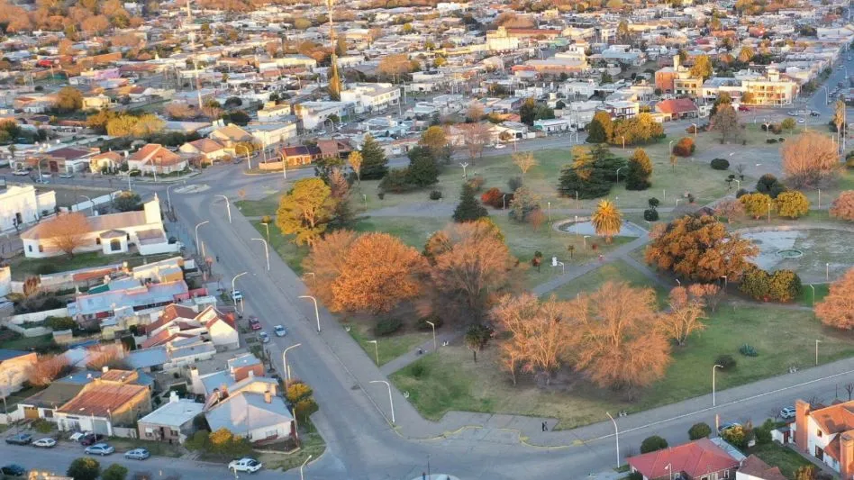

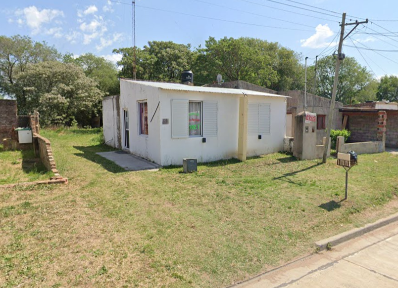
Radio La Porteña nació en 2021 con un propósito claro: mantener vivas las raíces del folclore argentino y las tradiciones que nos definen. Desde sus inicios, se convirtió en un espacio donde la música, la historia y la cultura popular se encuentran, ofreciendo a su audiencia un refugio sonoro lleno de nostalgia y pasión.
Con una programación pensada especialmente para quienes valoran nuestras costumbres, la radio ha sabido conectar con un público que encuentra en sus ondas un lazo con el pasado, una compañía fiel y un recordatorio de la identidad argentina. Más que una emisora, Radio La Porteña es un rincón donde las guitarras criollas, las zambas y las chacareras nunca dejan de sonar.
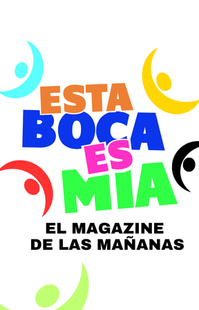
El magazine de las mañanas con la calidez y el estilo inconfundible de Roberto Casas. Un espacio donde el folklore, la reflexión y la actualidad se encuentran para acompañar cada jornada. Información, entrevistas y la voz de la gente hacen de este programa una cita imperdible de lunes a viernes.
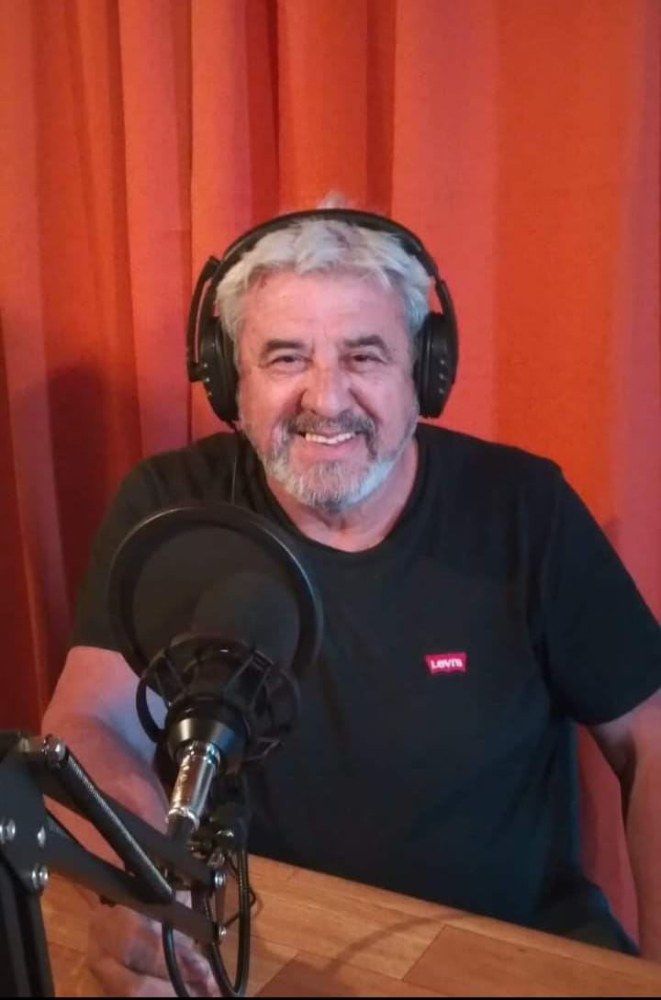
Cada mañana, Roberto Casas abre los micrófonos de Esta Boca es Mía para invitarte a compartir un momento único. Con una selección especial de folklore que enriquece el alma, este magazine matutino va más allá de la música: reflexiona sobre la vida, informa sobre lo que ocurre en la región y el país, y genera un espacio de diálogo con los oyentes. A lo largo del programa, la actualidad se combina con entrevistas a personajes que tienen algo interesante para contar, siempre con un tono cercano y ameno. La interacción con la audiencia es clave: aquí, cada voz cuenta. De lunes a viernes, las mañanas tienen su propia banda sonora y su lugar para la palabra, porque en Esta Boca es Mía, hablar también es compartir.
De Lunes a Viernes a las 8:00 A.M
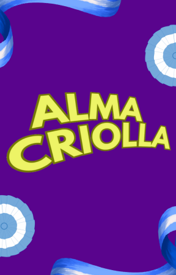
Un homenaje vivo a nuestras raíces, con la conducción de Alberto Torres de la Estancia El Chajá y Rusito Pérez, el cantor del pueblo, junto a la participación de Roberto Casas. Porque la tradición se siente y se honra, Alma Criolla mantiene encendida la llama de nuestra cultura.
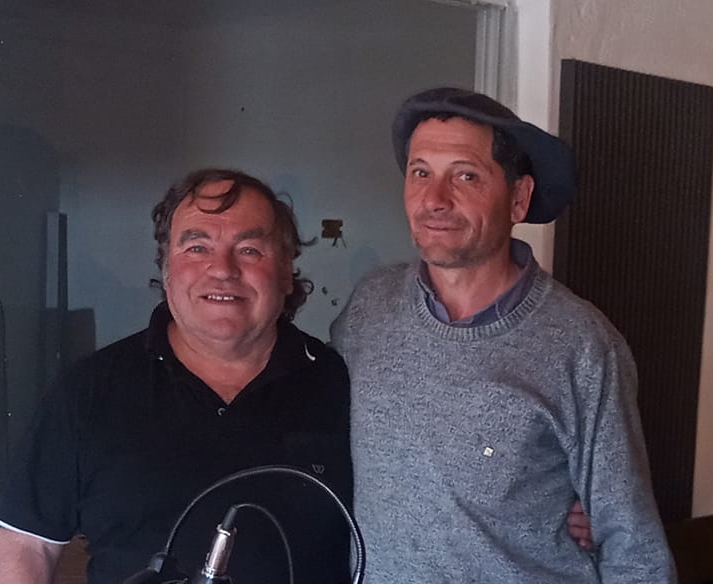
Cuando suenan los acordes de una chacarera, una zamba o un malambo, el corazón se llena de tradición. Eso es lo que se vive en Alma Criolla, el programa folklórico conducido por Alberto Torres de la Estancia El Chajá y Rusito Pérez, el cantor del pueblo, con la participación de Roberto Casas. Cada emisión es un encuentro con nuestra identidad, donde la música folklórica no solo se escucha, sino que se celebra. Entre guitarras y bombos, el aire se llena de coplas, anécdotas y ese espíritu festivo que nos une como pueblo. En Alma Criolla, la cultura se mantiene viva con la presencia de artistas locales que, en algunas ocasiones, se suman al programa con interpretaciones en vivo, dándole aún más color a la jornada. Pero más que un simple programa, Alma Criolla es una misión: la de honrar nuestras raíces y mantener encendida la tradición. Porque la música no solo se toca, se siente. Y aquí, la cultura se vive con el alma.
Domingos a las 9:00 A.M
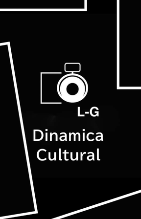
El punto de encuentro con el arte y la creatividad. Conducido por Graciela Dimarco y Laura Bertuzzi, este programa explora diferentes expresiones culturales como la música, el dibujo y mucho más.Un espacio para descubrir, aprender y celebrar la cultura en todas sus formas.
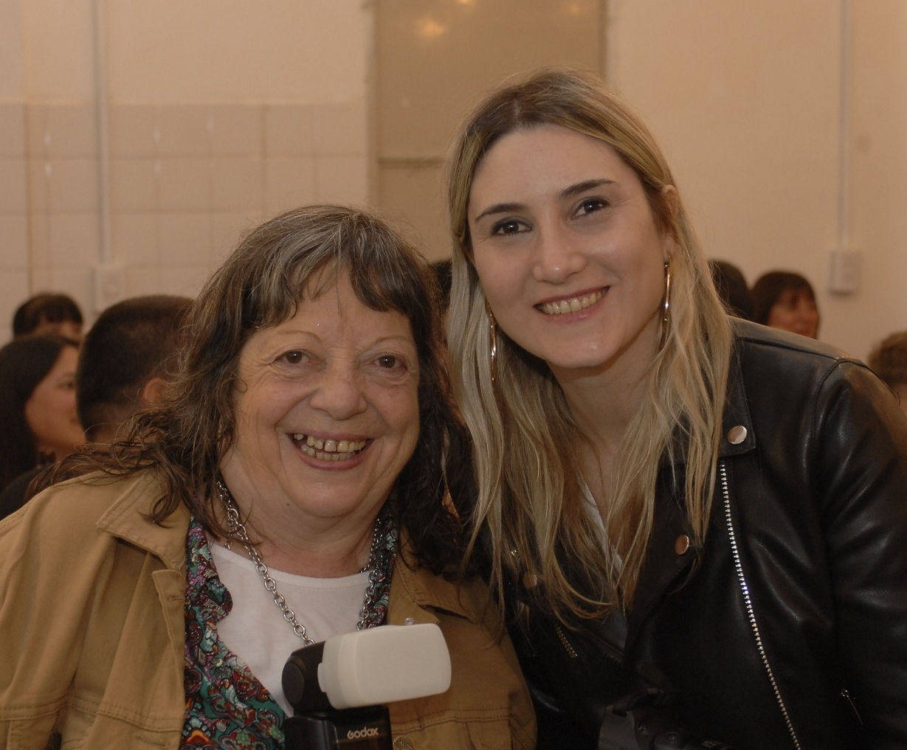
El arte y la cultura tienen su propio espacio en Dinámica Cultural, un programa donde la creatividad es la gran protagonista. Conducido por Graciela Dimarco y Laura Bertuzzi, este ciclo nos invita a explorar un mundo de ideas, colores y sonidos a través de conversaciones enriquecedoras y entrevistas con referentes de distintas disciplinas. Cada programa aborda dos temáticas culturales distintas, desde la música hasta el dibujo, pasando por la literatura, el teatro, la danza y muchas otras expresiones artísticas. Para profundizar en cada una, las conductoras reciben a dos invitados especiales, expertos en sus áreas, quienes comparten su trayectoria, su visión y sus experiencias en el mundo de la cultura. En Dinámica Cultural, cada episodio es una oportunidad para aprender, inspirarse y sumergirse en el arte de manera cercana y amena. Porque la cultura está en constante movimiento, y aquí la exploramos con pasión y curiosidad.
Jueves a las 19:30 P.M
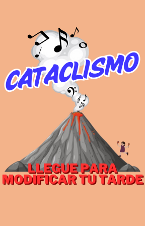
Los viernes tienen su propio ritmo en Cataclismo. Conducido por Beatriz Balvidares, este programa le pone sabor al cierre de la semana con la mejor música. Un espacio con melodías que llegan al corazón, creando el ambiente perfecto para empezar el fin de semana con toda la onda.
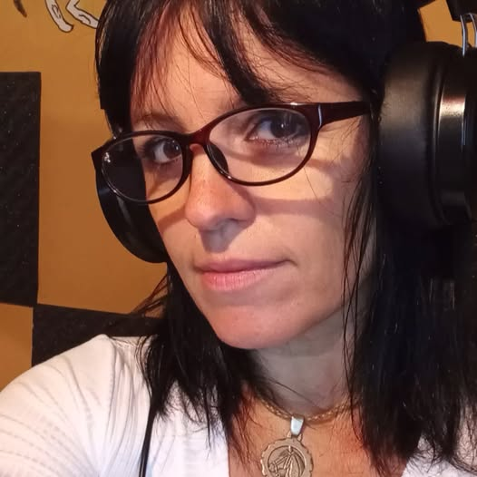
El viernes es sinónimo de fiesta, emoción y buena música, y Cataclismo lo sabe. Con la conducción de Beatriz Balvidares, este programa es la antesala perfecta para el fin de semana, con una selección de cumbia pegadiza y música romántica que invita a moverse y sentir. Cada semana, Cataclismo llega con una onda tropical inconfundible, donde los ritmos contagiosos y las letras que tocan el corazón crean una combinación explosiva. Ya sea para disfrutar desde casa, en el trabajo o preparando la noche del viernes, este programa es la compañía ideal para cerrar la semana con el mejor ánimo. Si querés empezar el fin de semana con ritmo y emoción, Cataclismo es tu cita de todos los viernes. ¡Dale volumen y viví la música como se merece!
Viernes a las 17:00 P.M
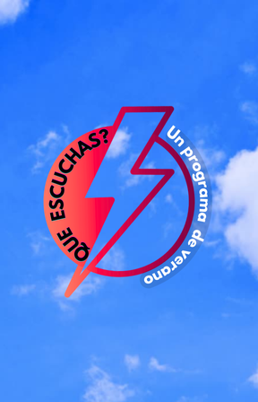
¿Qué Escuchás? Conducido por Fran Paiz, este programa revive los grandes éxitos de los '80s, '90s y '00s. Algunas noches, la magia sube de nivel con sets en vivo de DJs. Una cita obligada para los amantes de la música que marcó generaciones.
Si la nostalgia sonora tuviera un lugar en la radio, sin duda sería ¿Qué Escuchás?, el programa que cada viernes y sábado de 20 a 22 te hace viajar en el tiempo con los mejores clásicos de los '80s, '90s y '00s. Bajo la conducción de Fran Paiz, esta propuesta es un recorrido por los grandes himnos de la música, mayormente en inglés, con leyendas como Michael Jackson, Elton John y muchas más. Pero la experiencia no se queda solo en los éxitos del pasado: ¿Qué Escuchás? también te sumerge en la magia del cine con música de películas inolvidables y, en ocasiones especiales, sorprende con sets en vivo de DJs que transforman la noche en una verdadera pista de baile radial. Si sos de los que sienten que la mejor música viene de aquellas décadas doradas, ¿Qué Escuchás? es tu mejor plan de viernes y sábado. Subí el volumen, reviví los clásicos y disfrutá del mejor sonido de siempre.
Viernes y Sabados a las 20:00 P.M
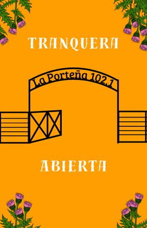
Los sábados comienzan con el alma de nuestra tierra en Tranquera Abierta. Desde las 7 de la mañana, Beatriz Balvidares te acompaña con un programa clásico de folclore, donde suenan las grandes canciones de siempre y también aquellas joyas que no se consiguen fácilmente.
Cuando el sol empieza a asomar en el horizonte, Tranquera Abierta ya está en el aire, abriendo paso a la tradición y el sentir de nuestra tierra. Cada sábado a las 7 de la mañana, Beatriz Balvidares nos invita a recorrer el camino del folclore clásico, con aquellas canciones que marcaron generaciones y con otras que, aunque difíciles de encontrar, siguen latiendo en la memoria de quienes aman nuestra música. En Tranquera Abierta, el folclore se vive con pasión y respeto, rescatando sonidos que forman parte de nuestra identidad. Es el lugar donde las guitarras criollas y las voces inmortales siguen contando historias, recordándonos que nuestras raíces están siempre presentes. Si la música de nuestra tierra es parte de vos, cada sábado a la mañana la tranquera está abierta para recibirte. ¡Sintonizá y dejate llevar por la tradición!
Sabados a las 7:00 A.M
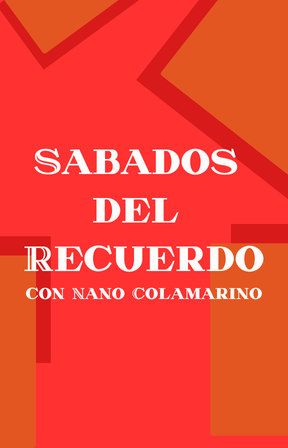
Un espacio donde la nostalgia se convierte en melodía y los clásicos nunca pasan de moda. Cada sábado Nano Colamarino te transporta a las décadas doradas de la música latina, el programa revive los grandes éxitos de los '60s, '70s y '80s, con artistas legendarios.
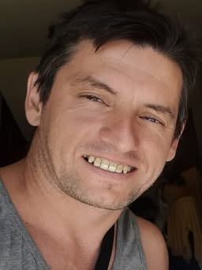
Los sábados tienen un sonido especial, el de aquellas canciones que marcaron una época y siguen resonando en el corazón de quienes las vivieron. De 9:30 a 12:30, Nano Colamarino abre las puertas de Sábados del Recuerdo, un programa dedicado a la mejor música latina de los '60s, '70s y '80s. Aquí, los grandes ídolos siguen brillando: José José, Sandro, Los Iracundos y tantos otros que dejaron huella con sus voces inconfundibles y letras inolvidables. Sábados del Recuerdo es un viaje musical donde la nostalgia se mezcla con la alegría de volver a escuchar esas canciones que nos acompañaron en momentos especiales. Si la música de aquellas décadas sigue siendo parte de tu vida, cada sábado tenés una cita con los recuerdos. Subí el volumen y disfrutá de los clásicos que nunca se van.
Sabados a las 9:30 A.M
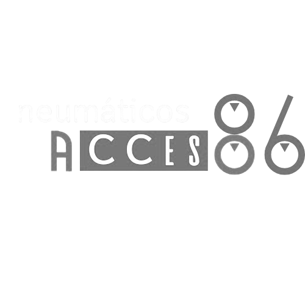
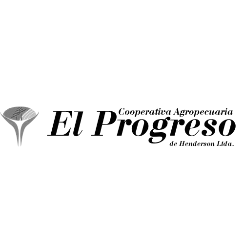
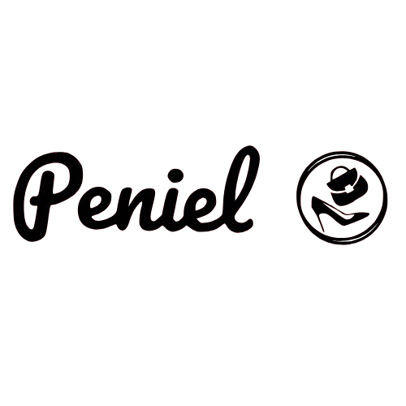
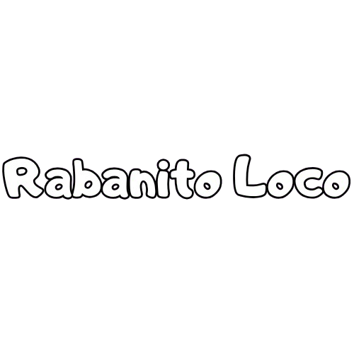
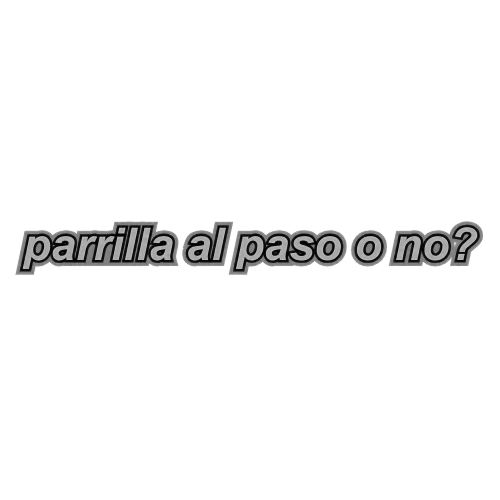
Acá esta el como: